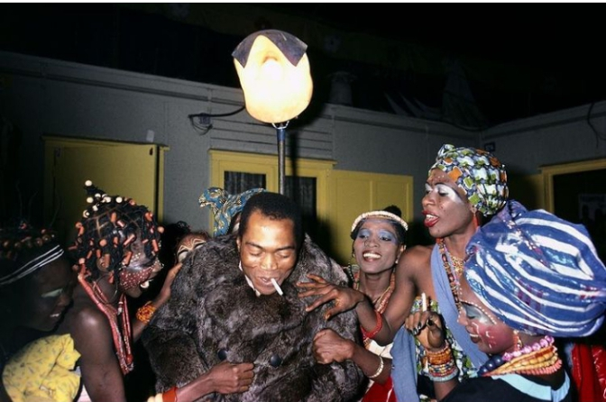

Fela Anikulapo Kuti (born Olufela Olusegun Oludotun Ransome-Kuti; 15 October 1938 – 2 August 1997) was a Nigerian multi-instrumentalist, bandleader, composer, political activist, and Pan-Africanist. He is best known for pioneering Afrobeat, a genre-blending traditional Yoruba and Afro-Cuban music with funk and jazz
At the height of his popularity, he was referred to as one of Africa's most "challenging and charismatic music performers. "AllMusic described him as "a musical and sociopolitical voice" of international significanceKING SANI ADE
| Birth name | Also known as | Born | Died | Years active | Associated acts | instruments |
|---|---|---|---|---|---|---|
| Olufela Olusegun Oludotun Ransome-Kuti | FELA KUTI | 15 October 1938 Abeokuta, Western Region, British Nigeria | 2 August 1997 (aged 58) Lagos, Lagos State, Nigeria | 1958-1997 | Africa '70Egypt '80Koola LobitosNigeria '70Hugh MasekelaGinger BakerTony AllenFemi KutiSeun KutiRoy AyersLester Bowie | Saxophonevocalskeyboardstrumpetguitardrums |
After Kuti and his band returned to Nigeria, the group was renamed (the) Afrika '70, as lyrical themes changed from love to social issues. He formed the Kalakuta Republic—a commune, a recording studio, and a home—for the many people connected to the band that he later declared independent from the Nigerian state. According to Lindsay Barrett, the name "Kalakuta" is derived from the infamous Black Hole of Calcutta dungeon in India.

the course includes
Frankl was a determinist raised in tradition of freudian psychology, which postulates that whatever happens to you as a child shapes your character and personality and basically govern your whole life.
the limits and parameter of your life are set, and basically , you can,t do much about it